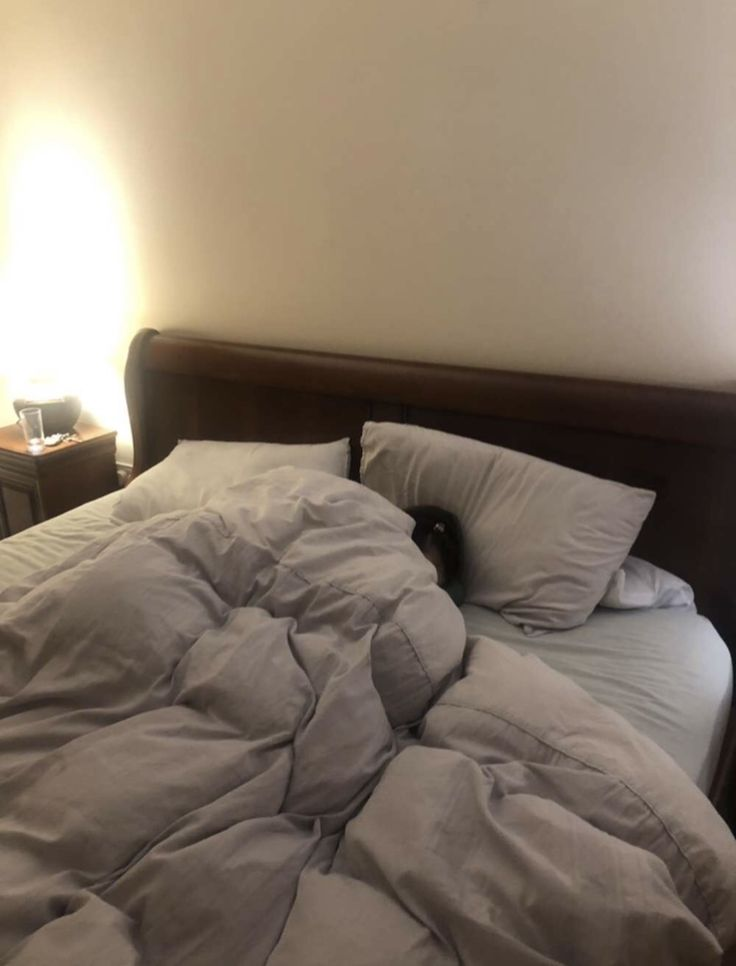

이 일은 내가 중학교 4학년 때 일어났다. 어느 평범한 점심시간이었다.
나는 낮잠을 자려고 침대에 누워 있었지만, 사실은 이불을 뒤집어쓰고 몰래 휴대폰을 하고 있었다.
그 이유는 부모님이 가끔 갑자기 내 방에 올라와 내가 정말 자고 있는지 확인했기 때문이다.
그래서 나는 이불을 완전히 뒤집어쓰고 휴대폰을 했다.
만약 누가 문을 열면 바로 휴대폰을 끄고 자는 척할 수 있었기 때문이다.
그날도 마찬가지였다.
이불 속에서 휴대폰을 하고 있는데 갑자기
나는 반사적으로 휴대폰을 바로 끄고 눈을 감았다. 발소리는 천천히 내 침대 쪽으로 다가왔다. 한 걸음 한 걸음이 매우 조용했지만, 낮의 고요한 분위기 속에서는 오히려 더 또렷하게 들려 조금 무섭게 느껴졌다.

하지만 방금 전의 상황을 다시 떠올려 보니 무언가 매우 이상하다는 느낌이 들었다.
그리고 그 발소리는 침대 머리맡에서 멈췄다.
방 안은 갑자기 이상할 정도로 조용해졌다.
나는 이불 속에서 눈을 꼭 감은 채 그대로 누워 있었지만, 누군가가 나를 가만히 내려다보고 있는 느낌이 분명히 들었다.👁️
그 순간 나는 시간이 멈춘 것처럼 느꼈다.
숨도 죽인 채 전혀 움직이지 못했다.
그때 내가 들을 수 있었던 유일한 소리는 내 심장이 쿵쾅거리는 소리뿐이었다.
한참 후에 다시 발소리가 들렸다.
하지만 이번에는 그 발소리가 조용히 방 밖으로 나갔다.
나는 여전히 자는 척을 하고 있었고 조금 무섭기도 해서 한동안 그대로 이불을 뒤집어쓴 채 누워 있었다. 그리고 한참 후에야 천천히 일어났다.
그리고 그 발소리가
발소리는 매우 가벼웠으며 아버지의 것도 아니었고 어머니의 것도 아니었다. 너무 이상하다고 생각한 나는 바로 아래층으로 내려갔다. 아버지는 아래층에서 일을 하고 계셨다. 그래서 나는 아버지께 물었다.
“아빠..ㅡㅡㅡ..약 10분 전에 제 방에 올라오셨어요?”
아버지는 바로 아니라고 말씀하셨다. 아버지는 계속 아래층에서 일을 하고 계셨다고 했다.
그래서 나는 다시 물었다.
“그럼 엄마는요?”
아버지는 어머니가 아침 일찍 밖에 나가셨다고 말했다.
나는 계속해서 물었다.
“....혹 …혹시 😨😨😨 집에 손님 왔어요? 아니면…누가 2층에 올라왔어요?”
…
(*_*)
…
(°_°)
…
(o_o)
…
(O_O)
하지만 아버지는 아무도 오지 않았다고 말했다.😨😨😨
질문을 할수록 나는 점점 더 혼란스러워졌다.
그때 나는
그래서 혹시 모를 상황에 대비해 물건을 하나 들고 집 안을 모두 확인해 보았다. 하지만 아무런 흔적도 발견할 수 없었다. 창문이 열린 것도 없었고 물건이 사라진 것도 없었다.
집 안은 여전히 평소와 다름없이 완전히 정상적이었다.
하지만 한 가지 더 이상한 점이 있었다.
그날 나는 방문을 닫지 않았던 것이 분명히 기억난다.
그런데 나는 문에서부터 시작되는 발소리만 들었다.👣👣👣
계단에서 올라오는 소리도, 복도에서 들리는 발소리도 전혀 듣지 못했다.
누군가가 조용히 내 방으로 들어와 잠시 나를 바라보다가 다시 나간 것이다.
그리고 가장 이상했던 점은 발소리가 문 앞까지 들렸다는 것이다.
하지만 문을 나간 뒤에는 그 소리가 갑자기 완전히 사라졌다.
마치 그 사람이 바람에 휩쓸려 사라진 것처럼 느껴졌다.
그리고 지금까지도 나는 그때의 질문에 대한 답을 찾지 못했다.
[ 그날 내 방에 들어왔던 그 사람은 도대체 누구였을까 ]
.
.
.
정말 사람이었을까.
아니면 다른 어떤 존재였을까.
이 이야기는 100% 실제로 있었던 일이다